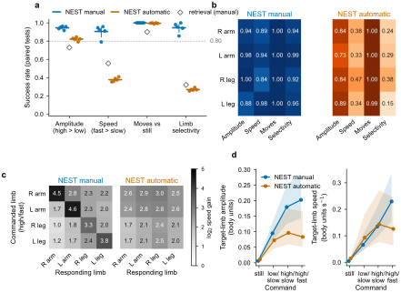
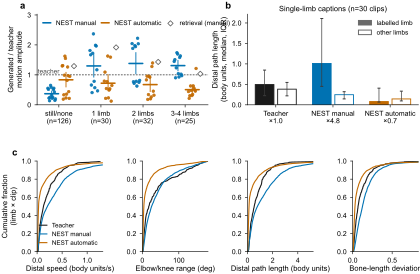
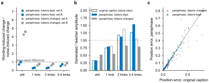
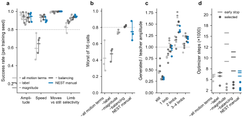
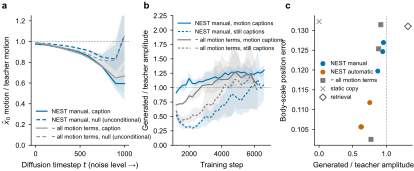
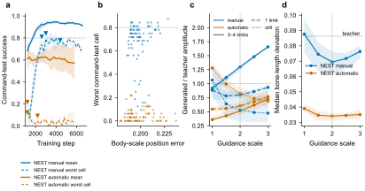

- Initial pose. The 20 body keypoints observed at frame 0 anchor the generation; frame 0 is copied, frames 1–19 are generated. Motion is represented as displacement from the starting pose in a torso-aligned frame, in body units.
- Movement specification. A one-sentence description, e.g. “the newborn moves its left leg with low amplitude and slow speed”. Manual descriptions are compiled from a structured clinical form (which limbs move, amplitude low/high, speed slow/fast).
- Structured limb tokens. A deterministic parser turns the sentence into four limb tokens (left/right arm, left/right leg), each encoding whether the limb is mentioned, moving or still, and its amplitude and speed grade; unmentioned limbs are unknown, not still. They sit next to frozen CLIP text tokens in the conditioning memory.
- Diffusion over trajectories. A factorized transformer (temporal, graph-biased joint and cross-attention; 2.1 M parameters) predicts the clean trajectory; sampling uses 50 DDIM steps and classifier-free guidance (w = 2).
- Magnitude matching. A per-limb loss matches each generated limb's amount of motion to the recording, independent of direction.
- Label-consistent kinematic bounds. A loss enforces bounds implied by the label: minimum amplitude for moving limbs and minimum speed for “fast”, maximum speed for “slow” and maximum amplitude for limbs described as still.
Results
All results use the selected checkpoints of three training seeds per condition, evaluated with locked checkpoints and settings on held-out test infants (1,203 clips in total; test split: 213 clips from 5 infants). The infant is the unit of inference; intervals are hierarchical bootstrap 95% intervals.
A. Movement command following · B. Manual specifications versus automatic captions
0.95 vs 0.62
mean success over 16 paired tests, manual vs automatic
+0.33
patient-level difference, 95% CI +0.28 to +0.38
0.91 vs 0.38
speed ordering (fast > slow)
0.95 vs 0.27
limb selectivity

On identical clips, sampling and recipe, the label interface determines what can be controlled. Both models move more under a movement command than under “still” (1.00 vs 1.00) and order amplitude grades (0.95 vs 0.82). The difference lies in speed and in which limb moves, the attributes that automatic captions never express. A retrieval baseline with manual labels reaches 0.63, so looking up a compatible training clip does not explain the result. With 5 test infants no per-test contrast remains significant after Holm adjustment; the evidence rests on the bootstrap intervals.
C. Behaviour on the original captions and calibration

| Generated / recorded amplitude | still | 1 limb | 2 limbs | 3–4 limbs |
|---|---|---|---|---|
| NEST, manual labels | 0.31 | 0.93 | 1.38 | 1.17 |
| NEST, automatic captions | 0.93 | 0.68 | 0.69 | 0.44 |
The manual model scales motion with the description: it under-moves still captions, is close to the recording on single-limb captions and over-moves multi-limb descriptions at guidance w = 2. On single-limb captions it concentrates motion in the labelled limb (labelled/other path ratio 4.8×, against 0.7× for the automatic model and 1.0× in the recordings), i.e. it follows the label more literally than the infants did. Generated amplitude tracks each infant's recorded amplitude with a log–log slope of 0.93 for the manual model and 0.37 for the automatic model; relative to the motion they generate, the automatic model's samples differ about as much as they move (relative spread 1.05), the manual model's are more consistent (0.66).
D. One infant, thirteen commands

Figure pending clearance for public release (Fig. 4 of the paper: generated keypoint trajectories of one test infant under 13 commands).
For this infant the manual model moves the commanded limb 1.3–14.3 times faster than the other limbs and orders amplitude and speed; the automatic model moves the commanded limb about as much as the others (ratio 0.6–1.4).
E. Robustness to free wording

Every distinct test caption was paraphrased twice in free clinical wording (160 paraphrases, written by a language model under fixed rules and frozen before analysis); 57 (36%) reduce to exactly the same limb tokens. When they do, rewording changes the trajectory about half as much as resampling the noise (ratio 0.53, 95% CI 0.36 to 0.73) and accuracy is preserved (position error 0.108 vs 0.118 body units). When they do not, generation degrades gracefully: motion still concentrates in the described limb (3.3× vs 4.4×), while the graded amount of motion drifts toward a default (log amplitude ratio −0.31; calibration slope 0.91 to 0.59).
F. Ablations of the training objective

| Arm | mean success | speed | Δ mean vs NEST [95% CI] |
|---|---|---|---|
| NEST (manual) | 0.95 | 0.91 | — |
| − label-consistent bounds | 0.86 | 0.64 | −0.09 [−0.11, −0.06] |
| − all motion terms | 0.84 | 0.59 | −0.11 [−0.14, −0.07] |
| − magnitude matching | 0.94 | 0.93 | interval spans 0 |
| − caption balancing | 0.95 | 0.94 | interval spans 0 |
Label-consistent bounds improve speed control and suppress motion on still captions (still-caption amplitude 0.31 with them, 0.60 without, as a fraction of the recorded motion), but substantial command adherence remains without them: the bounds strengthen the response to the labels rather than accounting for most of it. Removing magnitude matching or caption balancing has small estimated effects on mean success; this does not establish equivalence.
G. Motion amount, reconstruction metrics and training dynamics

Position error does not track controllability: copying the first frame never moves yet has error close to retrieving real infant motion (0.132 vs 0.131 body units), and the automatic model has lower error than the manual model (0.108 vs 0.124) despite weaker control.
